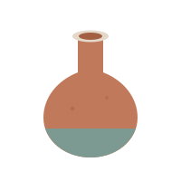

Μοναδικό, κάθε φορά
Κάθε κομμάτι υπάρχει μόνο μία φορά.
Ένα πολύ μικρό εργαστήριο. Όλα πλάθονται, γλασάρονται και ψήνονται στο χέρι, και το γλάσο δεν πέφτει ποτέ δύο φορές το ίδιο — κανένα κομμάτι δεν μπορεί να ξαναφτιαχτεί. Αυτό που βλέπετε είναι το μόνο που υπάρχει.

Φρέσκα από τον φούρνο
Το τελευταίο ψήσιμο
Αυτά είναι μεμονωμένα κομμάτια, όχι σειρά. Το καθένα βγήκε από τον φούρνο όπως βγήκε και δεν πρόκειται να ξαναβγεί έτσι.

Το εργαστήριο
Δύο χέρια, και τα δύο δικά μου
Το Sea Salt Clay είναι ένα άτομο, στην Αττική. Δεν υπάρχει κανένας άλλος — πλάθω κάθε κομμάτι, το γλασάρω, το ψήνω και το πακετάρω μόνη μου, εδώ και περίπου πέντε χρόνια.
Αυτό που με κρατάει στον τροχό είναι ότι ο πηλός είναι χώμα. Παίρνεις μια μάζα γης και γίνεται η κούπα που κάποιος πιάνει κάθε πρωί. Μου φαίνεται ακόμα εκπληκτικό.
Από τον πηλό στο ράφι
Τέσσερα βήματα, δύο εβδομάδες
-
Πλάσιμο
Ο πηλός ζυμώνεται, κεντράρεται και πλάθεται στον τροχό, και μετά αφήνεται μια νύχτα να σφίξει.
-
Ξύσιμο
Κάθε κομμάτι ξαναμπαίνει στον τροχό για να σκαλιστεί η βάση του, και τα χερούλια τραβιούνται στο χέρι.
-
Πρώτο ψήσιμο
Ένα πρώτο ψήσιμο σε χαμηλή θερμοκρασία σκληραίνει τον πηλό, ώστε να δεχτεί το γλάσο χωρίς να διαλυθεί.
-
Γλάσο & ψήσιμο
Τα γλάσα φτιάχνονται στο εργαστήριο, μπαίνουν με βούτηγμα στο χέρι, και ψήνονται στους 1200°C μέχρι να γυαλίσουν.
Μείνετε κοντά
Τα νέα κομμάτια ανεβαίνουν πρώτα στο Instagram
Ακολουθήστε και θα δείτε τι βγαίνει από τον φούρνο, συνήθως πριν εμφανιστεί εδώ.
Ακολουθήστε @seasaltclay